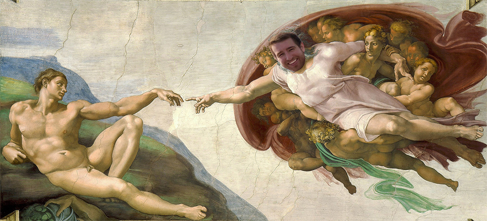

Have you ever been mesmerized before? If you’ve never witnessed greatness then you’re in for a treat. This is arguably the greatest HTML website known to mankind. The code is written with precision and eloquence and maintains a visual aesthetic similar to Michelangelo’s paintbrush.
I possess a diverse array of skills in nearly every facet needed for success in the modern, technology-driven work world. I have always been a creative and ambitious person, which has led me to gain knowledge and experience in multiple disciplines, as displayed by this website. As a content creator, I believe my work is best shown through examples. A resume doesn’t suffice for this line of work and I encourage you to visit my portfolio to learn more about my profession as well as personal background.
| Writing | Graphic Design | Video Production | Website Management | Social Media Management |
| AP style, MLA style, interviewing subject matter experts, journalistic integrity, proofreading and copyediting. | Adobe Illustrator, Adobe InDesign and Adobe Photoshop. | Adobe Premiere Pro, Final Cut Pro X, video shooting. I have the ability to take a project from inception to post-production. | HTML, CSS, Google Analytics, Drupal and Wordpress. I regularly make content and structural changes to med.umn.edu and www.mphysicians.org. | Hootsuite, content strategy, Facebook advertising, brand management and customer engagement. |
I am constantly enhancing my current skill set while simultaneously developing new skills to my professional portfolio. If you would like to learn more about my experiences or collaborate on a project, please reach out!
Includes examples of writing, graphic design, website and social media management, video production and photography. These are just a few selections out of hundreds of previously completed projects. Please do not hesitate to reach out for further examples.
View More of My Work